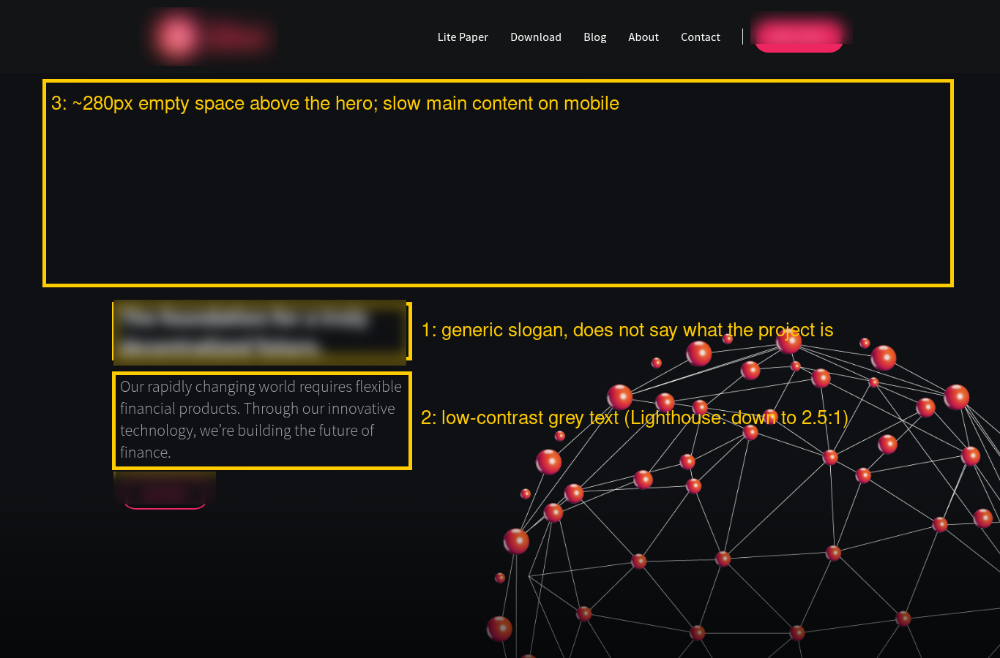

Passive review only: we look at what any visitor can see. No hacking, no probing, no access to your systems.
Anonymized: the project name, domain and logo are withheld and blurred. Checked 15 Oct 2026 using only what any visitor can see (public pages and response headers). This was not client work, and the project has not reviewed it. Lighthouse figures are lab tests, not real-user data.

Two Lighthouse mobile lab runs measured Largest Contentful Paint at 10.3 s and 10.9 s (good is under 2.5 s). The homepage downloads about 4.7 MB, and around 283 KB of JavaScript goes unused.
Fix: Compress and resize the hero and background images (WebP/AVIF), lazy-load media below the fold, and drop unused scripts.
Search results and link previews show "Home" with no description, so people who search for the project get no reason to click.
Fix: Use a title that names the project and says what it does, plus a meta description of about 150 characters.
The hero headline is a generic slogan about a decentralized future. A first-time visitor can't tell whether this is a wallet, a chain or a coin (screenshot item 1).
Fix: Lead with one concrete sentence on what the product does and who it's for, then the buy button.
Lighthouse flags several elements below the 4.5:1 contrast minimum, the worst at 2.5:1 (grey on near-black). That's hard to read on phones (screenshot item 2).
Fix: Lighten the body text to around #b8bcc6 or brighter.
The Telegram, Discord and Twitter icon links have no text label, so screen readers just announce "link".
Fix: Add an aria-label to each icon link.
/sitemap.xml returns 404, robots.txt is empty, and the page has no canonical link and no lang attribute.
Fix: Turn on the site builder's auto-generated sitemap, reference it in robots.txt, and set the site language and canonical URL.
HSTS, X-Frame-Options and a frame-ancestors CSP are set (good). X-Content-Type-Options, Referrer-Policy and Permissions-Policy are missing.
Fix: Add them at the CDN or proxy layer.
Want the same for your project? Email esa@mail.grokbot.com for a free 3-finding preview. We only use email and never DM.